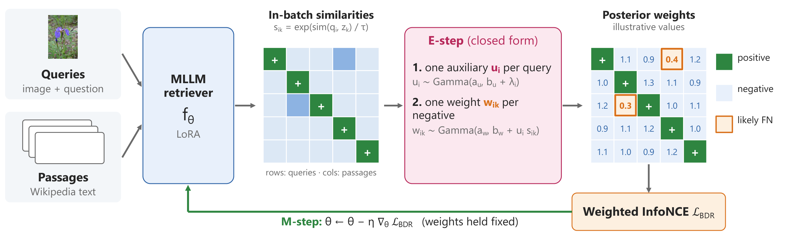
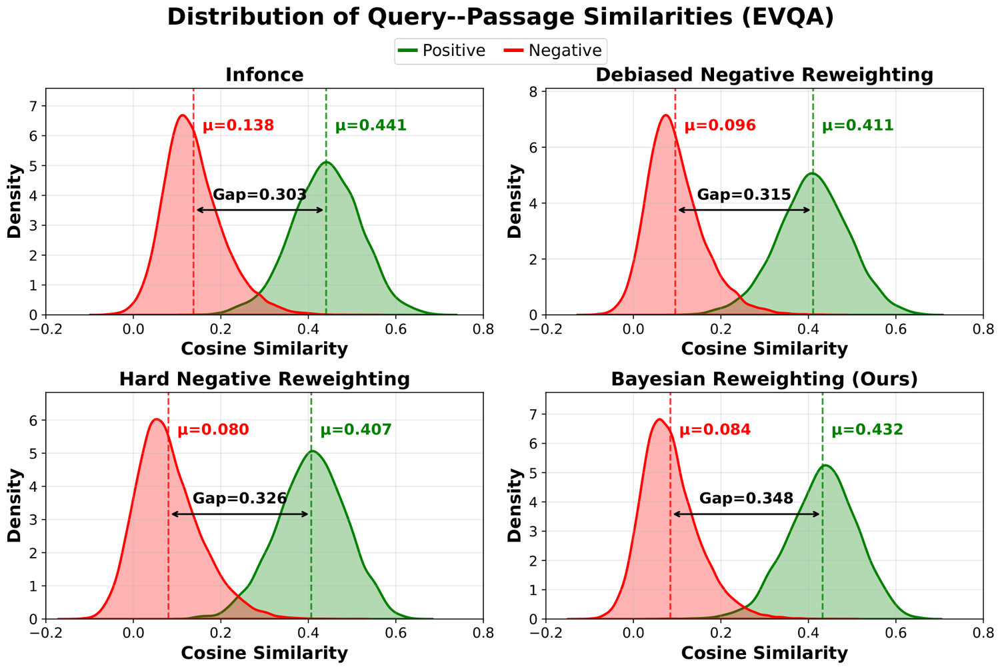
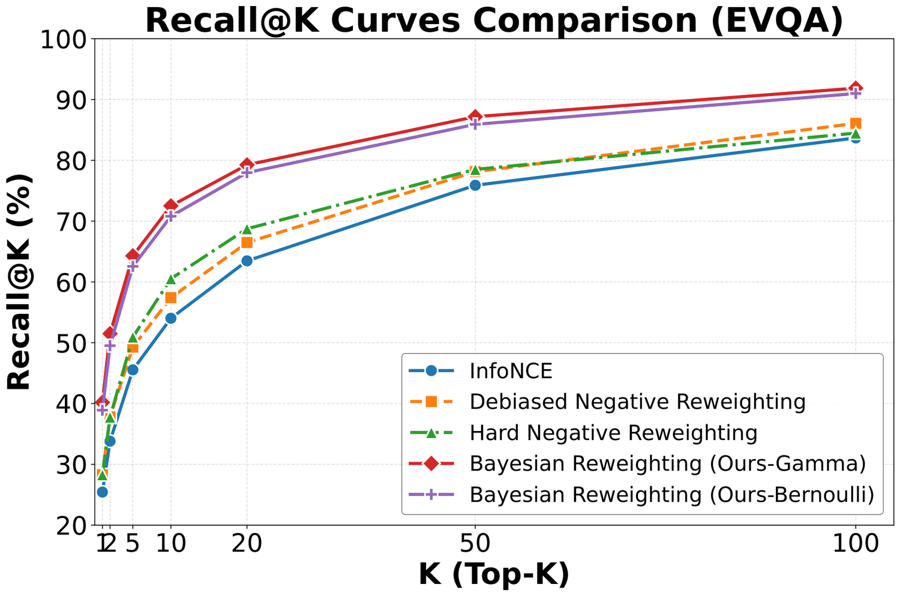
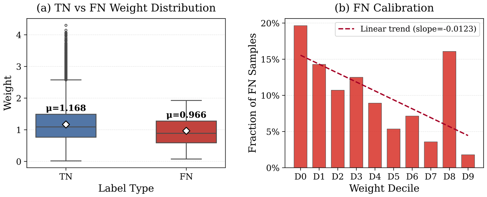

Abstract
Multimodal retrievers are essential for knowledge-based visual question answering, where they retrieve external evidence for image–question pairs. However, existing contrastive training methods typically treat all unmatched query–document pairs as equally informative negatives, which is problematic because many unmatched documents may still be semantically relevant or partially useful. We propose Bayesian Data Reweighting (BDR), a probabilistic framework that models query–document importance as latent variables and adaptively infers posterior weights to downweight likely false negatives. With closed-form posterior updates under conjugate priors and stochastic EM optimization, our method consistently improves retrieval accuracy across three retrievers and seven knowledge-based VQA benchmarks.
Highlights
False negatives in KB-VQA
Knowledge documents are weakly annotated and overlap heavily. Many "negatives" in a batch are relevant passages that InfoNCE wrongly pushes away.
Closed-form Bayesian weights
Each negative gets a latent weight. Laplace augmentation and conjugate priors give closed-form posteriors, trained with stochastic EM.
Consistent gains, no extra cost
+12.1 average recall on seven M2KR benchmarks, gains on three backbones and in downstream VQA, with at most 2% extra training time.
Method

One BDR training step. The retriever scores every query–passage pair in the batch. The E-step samples an auxiliary variable \(u_i\) per query and a weight \(w_{ik}\) per negative from their closed-form posteriors, so negatives that look suspiciously similar to the query (likely false negatives) get small weights. The M-step updates the retriever with the weighted InfoNCE loss. Weight values in the figure are illustrative.
Weighted contrastive objective. Let \(s_{ik} = \exp(\mathrm{sim}(q_i, z_k)/\tau)\) be the exponentiated cosine similarity between query \(q_i\) and document \(z_k\). Standard InfoNCE gives every in-batch negative the same weight. BDR instead attaches a weight \(w_{ik} \ge 0\) to each negative pair:
$$\mathcal{L}_{\mathrm{BDR}}(\mathcal{B};\theta) = -\frac{1}{B}\sum_{i=1}^{B}\log\frac{s_i^{+}}{s_i^{+}+\sum_{k=1}^{K} w_{ik}\, s_{ik}^{-}}.$$Setting \(w_{ik}=1\) recovers InfoNCE. We treat the weights as latent random variables, read the objective as a per-query pseudo-likelihood \(p_i(\mathbf{w}_i,\theta)\), and infer them jointly with the retriever. No clean validation set and no gradient-based importance estimate is needed:
$$p(\mathbf{w},\theta \mid \mathcal{X}) \;\propto\; \prod_{i=1}^{|\mathcal{X}|} p_i(\mathbf{w}_i,\theta)\,\prod_{i,k} p(w_{ik})\,p(\theta).$$Laplace augmentation. All weights of a query share the normalizer \(\lambda_i = s_i^{+}+\sum_k w_{ik}s_{ik}^{-}\), so their conditionals have no closed form. Using \(\lambda_i^{-1} = \int_0^\infty e^{-\lambda_i u_i}\,du_i\), one auxiliary variable \(u_i\) per query factorizes the likelihood:
$$\tilde p_i(u_i,\mathbf{w}_i,\theta) \;\propto\; s_i^{+}\,e^{-u_i s_i^{+}} \prod_{k=1}^{K} e^{-u_i w_{ik} s_{ik}^{-}}.$$Closed-form posteriors. Given \(u_i\), the weights are conditionally independent, and conjugate priors give closed-form conditionals. A Gamma prior on \(u_i\) yields \(u_i \mid - \sim \mathrm{Gamma}\big(a_u,\, b_u + s_i^{+} + \sum_k w_{ik}s_{ik}^{-}\big)\). For the weights, a Gamma prior gives soft reweighting and a Bernoulli prior gives hard keep-or-drop gating:
$$\text{Gamma prior:}\quad w_{ik}\mid - \sim \mathrm{Gamma}\big(a_w,\, b_w + u_i\, s_{ik}^{-}\big), \qquad \mathbb{E}[w_{ik}\mid -] = \frac{a_w}{b_w + u_i\, s_{ik}^{-}},$$ $$\text{Bernoulli prior:}\quad \mathbb{E}[w_{ik}\mid -] = P(w_{ik}=1\mid -) = \frac{p_w\, e^{-u_i s_{ik}^{-}}}{1-p_w+p_w\, e^{-u_i s_{ik}^{-}}}.$$In both cases, a negative that is highly similar to the query gets a smaller expected weight.
Stochastic EM. Each iteration samples a mini-batch, computes similarities with the current retriever, draws \(u_i\) and then \(w_{ik}\) from their posteriors (E-step), and takes a gradient step on \(\mathcal{L}_{\mathrm{BDR}}\) with the sampled weights (M-step). The sampling is element-wise, so its cost is negligible next to the encoder's forward and backward passes.
Experimental Results
Retrievers are multimodal LLM embedding models (last-token embedding, LoRA fine-tuning). We report Recall@K (R@K: is the target document in the top K?) and Pseudo Recall@K (PR@K: does any top-K document contain the answer?).
Comparison with reweighting baselines (Qwen2-VL-2B, 10K training samples per dataset)
| Method | OKVQA | EVQA | ||||||
|---|---|---|---|---|---|---|---|---|
| R@1 | R@5 | PR@1 | PR@5 | R@1 | R@5 | PR@1 | PR@5 | |
| Uniform Negative Sampling (InfoNCE) | 23.0 | 45.8 | 39.8 | 61.7 | 28.0 | 57.0 | 35.5 | 63.6 |
| Random Negative Reweighting | 22.8 | 46.8 | 37.4 | 59.5 | 27.2 | 55.2 | 34.1 | 62.4 |
| Similarity-based Reweighting | 24.6 | 47.6 | 39.0 | 60.1 | 27.6 | 58.1 | 34.6 | 64.8 |
| Margin-based Reweighting Loss | 25.4 | 49.3 | 40.7 | 61.4 | 28.8 | 59.8 | 35.5 | 65.7 |
| Decoupled Positive Reweighting | 25.6 | 49.1 | 40.5 | 60.9 | 29.9 | 60.3 | 36.9 | 67.0 |
| Debiased Negative Reweighting | 25.9 | 50.5 | 42.0 | 62.6 | 30.6 | 60.9 | 37.4 | 67.4 |
| Hardness Negative Reweighting | 26.5 | 49.8 | 42.6 | 62.8 | 31.7 | 61.1 | 37.6 | 66.9 |
| BDR (Bernoulli prior) | 28.9±0.7 | 53.8±0.7 | 44.4±1.0 | 63.5±0.4 | 33.5±1.3 | 63.9±1.3 | 40.6±1.3 | 69.7±1.0 |
| BDR (Gamma prior) | 30.1±0.4 | 54.8±0.8 | 45.9±0.9 | 66.0±0.6 | 35.1±0.9 | 65.6±1.6 | 42.2±0.9 | 71.5±1.4 |
BDR is best on every metric. With the Gamma prior, R@1 improves by 7.1 points over InfoNCE on both datasets and by 3.6 / 3.4 points over the strongest baseline (hardness reweighting). Soft Gamma weights beat hard Bernoulli gating.
Seven M2KR benchmarks (Qwen2-VL-2B, 1K training samples per task, trained jointly)
| Method | EVQA | OKVQA | KVQA | InfoSeek | WIT | OVEN | LLaVA | Avg. | |||||||
|---|---|---|---|---|---|---|---|---|---|---|---|---|---|---|---|
| R@1 | R@5 | R@1 | R@5 | R@1 | R@5 | R@1 | R@5 | R@1 | R@5 | R@1 | R@5 | R@1 | R@5 | ||
| Uniform Negative Sampling (InfoNCE) | 27.7 | 55.8 | 24.9 | 47.0 | 26.1 | 52.0 | 21.1 | 43.3 | 23.0 | 43.3 | 26.2 | 52.6 | 77.2 | 92.7 | 43.8 |
| Debiased Negative Reweighting | 26.9 | 56.7 | 23.1 | 45.4 | 27.1 | 53.6 | 27.8 | 47.7 | 35.6 | 58.5 | 38.7 | 64.2 | 65.3 | 87.2 | 47.0 |
| Hardness Negative Reweighting | 30.2 | 59.2 | 19.6 | 39.1 | 25.7 | 51.9 | 36.4 | 59.6 | 33.9 | 56.5 | 42.0 | 66.8 | 58.6 | 84.6 | 47.4 |
| BDR (Bernoulli prior) | 34.0 | 65.1 | 23.5 | 44.0 | 31.9 | 59.1 | 40.2 | 66.1 | 41.7 | 65.1 | 47.4 | 71.5 | 76.0 | 93.5 | 54.2 +10.4 |
| BDR (Gamma prior) | 37.8 | 68.8 | 26.0 | 50.0 | 35.9 | 61.6 | 39.3 | 62.8 | 42.9 | 67.0 | 48.3 | 72.7 | 76.6 | 93.1 | 55.9 +12.1 |
The Gamma-prior variant has the best average recall and the Bernoulli-prior variant is best on InfoSeek. Heuristic reweighting helps unevenly; for example, hardness reweighting loses 5.3 R@1 on OKVQA and 18.6 on LLaVA relative to InfoNCE. Gains in the Avg. column are measured against InfoNCE.
Different retriever backbones on full M2KR
| Retriever | EVQA | OKVQA | InfoSeek | OVEN | LLaVA | KVQA | Avg. | |||
|---|---|---|---|---|---|---|---|---|---|---|
| R@5 | PR@5 | R@5 | PR@5 | R@5 | PR@5 | R@5 | R@1 | R@5 | ||
| UniIR (Feature Fusion) | 17.0 | 35.5 | 9.3 | 58.1 | 24.5 | 46.0 | 63.6 | 47.8 | 13.5 | 35.0 |
| CLIP (Unimodal) | 17.2 | 29.8 | 4.3 | 37.9 | 25.7 | 44.2 | 69.1 | 44.8 | 56.1 | 36.6 |
| CLIP (Feature Fusion) | 61.9 | 71.9 | 27.9 | 67.5 | 37.3 | 56.3 | 63.0 | 72.0 | 41.1 | 55.4 |
| PreFLMR | 62.0 | 72.0 | 30.2 | 67.4 | 39.2 | 57.7 | 64.3 | 72.6 | 41.9 | 56.4 |
| ReT | 48.6 | 60.2 | 19.0 | 63.8 | 52.0 | 62.5 | 84.0 | 79.2 | 60.6 | 58.9 |
| Qwen2-VL-2B | 50.4 | 63.9 | 24.8 | 58.7 | 58.5 | 53.7 | 75.6 | 84.2 | 51.0 | 57.9 |
| Qwen2-VL-2B w/ BDR | 51.2 +0.8 | 64.2 +0.3 | 26.6 +1.8 | 59.7 +1.0 | 60.5 +2.0 | 56.7 +3.0 | 78.3 +2.7 | 88.7 +4.5 | 55.6 +4.6 | 60.2 +2.3 |
| Phi-3.5-V-3.8B | 45.1 | 60.3 | 35.1 | 65.3 | 40.8 | 44.3 | 71.5 | 91.4 | 52.6 | 56.3 |
| Phi-3.5-V-3.8B w/ BDR | 49.2 +4.1 | 62.2 +1.9 | 42.3 +7.2 | 69.1 +3.8 | 43.8 +3.0 | 47.5 +3.2 | 74.7 +3.2 | 91.6 +0.2 | 57.7 +5.1 | 59.8 +3.5 |
| Qwen2-VL-7B | 62.0 | 70.8 | 41.4 | 68.7 | 64.6 | 58.4 | 80.9 | 90.0 | 63.2 | 66.6 |
| Qwen2-VL-7B w/ BDR | 64.3 +2.3 | 73.1 +2.3 | 43.5 +2.1 | 69.9 +1.2 | 66.7 +2.1 | 60.5 +2.1 | 83.4 +2.5 | 91.0 +1.0 | 65.3 +2.1 | 68.6 +2.0 |
Trained on the full M2KR corpus and evaluated on the full test sets. Following PreFLMR and ReT, OVEN and KVQA report R@5 and LLaVA reports R@1. BDR (Gamma prior) improves every backbone, and Qwen2-VL-7B w/ BDR has the best average, ahead of PreFLMR and ReT.
Downstream answer generation with frozen generators
| Generator (frozen) | Retriever | InfoSeek | EVQA | ||||||
|---|---|---|---|---|---|---|---|---|---|
| R@5 | VQA Acc. | EM | BLEU-1 | R@5 | VQA Acc. | BLEU-1 | BEM | ||
| LLaVA-1.6-13B | No retrieval | – | 5.4 | 5.3 | 11.9 | – | 2.7 | 8.9 | 69.8 |
| PreFLMR | 39.2 | 12.9 | 12.4 | 21.2 | 62.0 | 8.7 | 26.2 | 74.3 | |
| ReT | 52.0 | 17.3 | 17.2 | 28.9 | 48.6 | 6.5 | 19.2 | 73.2 | |
| Qwen2-VL-7B w/ BDR (ours) | 66.7 | 20.8 | 20.9 | 34.0 | 64.3 | 9.1 | 26.9 | 77.2 | |
| Oracle retriever | – | 37.5 | 39.5 | 56.4 | – | 16.1 | 46.1 | 86.7 | |
| Qwen2.5-VL-7B | No retrieval | – | 14.4 | 14.5 | 25.2 | – | 4.6 | 14.3 | 65.2 |
| PreFLMR | 39.2 | 21.5 | 16.1 | 24.1 | 62.0 | 11.5 | 34.7 | 68.3 | |
| ReT | 52.0 | 25.9 | 21.5 | 32.2 | 48.6 | 10.8 | 28.1 | 67.9 | |
| Qwen2-VL-7B w/ BDR (ours) | 66.7 | 32.1 | 27.5 | 41.3 | 64.3 | 14.4 | 37.1 | 71.2 | |
| Oracle retriever | – | 46.2 | 41.3 | 61.9 | – | 23.3 | 57.8 | 89.1 | |
The oracle retriever returns all ground-truth documents. With either generator, the BDR retriever gives the best VQA accuracy, EM, BLEU-1 and BEM among the non-oracle retrievers (bold), narrowing the gap to the oracle. Better retrieval translates directly into better answers.
Show prior sensitivity and training cost
| Prior (OKVQA R@1) | Value → R@1 | ||||
|---|---|---|---|---|---|
| \(b_w\) (Gamma) | 0.1 → 30.0 | 0.5 → 27.9 | 1.0 → 28.6 | 2.0 → 27.6 | 5.0 → 28.7 |
| \(b_u\) (Gamma) | 0.1 → 30.1 | 0.5 → 29.9 | 1.0 → 29.1 | 5.0 → 29.9 | 20 → 26.1 |
| \(p_w\) (Bernoulli) | 0.50 → 28.7 | 0.70 → 28.7 | 0.85 → 28.8 | 0.95 → 29.0 | |
| \(N\) (posterior draws) | 1 → 27.9 | 2 → 29.0 | 4 → 28.8 | 8 → 29.1 | |
Gamma shapes fixed to \(a_w = a_u = 1\). BDR is stable across most settings; only a very strong prior (\(b_u = 20\)) hurts. One to eight posterior draws perform about the same.
| Model | Batch | Method | Steps | GPU (GB) | Time (h) |
|---|---|---|---|---|---|
| Phi-3.5-V | 32 | InfoNCE | 521 | 19.9 | 3.17 |
| BDR | 521 | 20.0 | 3.22 | ||
| Qwen2-VL-7B | 32 | InfoNCE | 521 | 32.8 | 2.01 |
| BDR | 521 | 32.9 | 2.05 | ||
| Phi-3.5-V | 128 | InfoNCE | 131 | 19.8 | 3.16 |
| BDR | 131 | 20.3 | 3.18 | ||
| Qwen2-VL-7B | 128 | InfoNCE | 131 | 32.8 | 2.00 |
| BDR | 131 | 32.9 | 2.02 |
BDR adds at most 2% training time and 0.5 GB of GPU memory, because posterior sampling is closed-form and element-wise.
How Does BDR Work?

More discriminative embeddings. Cosine similarities of positive and negative query–passage pairs on EVQA. BDR has the largest gap between the two means, 0.348 versus 0.303 for InfoNCE, and also beats debiased and hard-negative reweighting.

Better ranking at every retrieval budget. Recall@K on EVQA for K from 1 to 100. Both BDR variants stay above all baselines, and the gap is largest at small K, so relevant documents move to the top of the list.

Calibrated weights. We manually identified 54 false negatives among 1,000 sampled EVQA query–passage pairs. They receive lower weights than true negatives on average (0.966 vs. 1.168), and they concentrate in the low-weight deciles (linear trend slope −0.0123). BDR finds likely false negatives without ever seeing their labels.